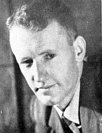

Ian Smith in the 1950s
Ian Smith (1919–2007) was Prime Minister of Rhodesia (or Southern Rhodesia; today Zimbabwe) from 1964 to 1979. During the Second World War, he served as a Royal Air Force fighter pilot in the Middle East and Europe, suffering permanent facial and bodily wounds. In 1962 he helped form the all-white, firmly conservative Rhodesian Front, which called for independence without an immediate shift to black majority rule. He led the predominantly white government that unilaterally declared independence from the United Kingdom in 1965, after prolonged dispute. During Smith's premiership, the Bush War pitted the unrecognised administration's forces against communist-backed black nationalist guerrilla groups. His government endured in the face of United Nations economic sanctions with the assistance of South Africa and, until 1974, Portugal. Smith is still venerated by some, while critics describe an unrepentant racist whose policies and actions caused the deaths of thousands and contributed to Zimbabwe's later crises. (Full article...)


_(cropped).jpg) Hollow Horn Bear (1850–1913) was a Brulé Lakota leader, who fought in many battles, including Little Bighorn. As police chief of the Rosebud Reservation, he arrested Crow Dog for the murder of Spotted Tail and testified before the Supreme Court of the United States in Ex parte Crow Dog. He was the chief orator for the Lakota, and took part in the inaugural parades for Theodore Roosevelt and Woodrow Wilson. He was featured on a 1922 postage stamp and the 1970 $10 Military Payment Certificate, and was possibly the basis for other depictions of Native Americans including the US five-dollar bill.
Photograph: Library of Congress Harris & Ewing collection; restoration: GreenMeansGo
Hollow Horn Bear (1850–1913) was a Brulé Lakota leader, who fought in many battles, including Little Bighorn. As police chief of the Rosebud Reservation, he arrested Crow Dog for the murder of Spotted Tail and testified before the Supreme Court of the United States in Ex parte Crow Dog. He was the chief orator for the Lakota, and took part in the inaugural parades for Theodore Roosevelt and Woodrow Wilson. He was featured on a 1922 postage stamp and the 1970 $10 Military Payment Certificate, and was possibly the basis for other depictions of Native Americans including the US five-dollar bill.
Photograph: Library of Congress Harris & Ewing collection; restoration: GreenMeansGo